1. Windows Server
Configuramos nuestro servidor donde instalaremos un Active Directory con dominio.
1.1 Configuración
Vamos al administrador del servidor y agregamos un nuevo rol. Seleccionamos "Servicios de Dominio de Active Directory". A continuación ejecutamos "dcpromo.exe" en la ventana de ejecutar.
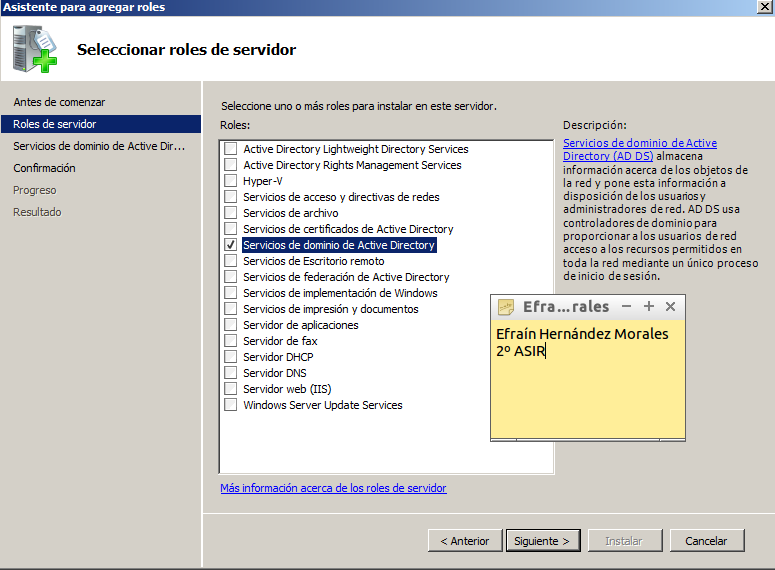Creamos un nuevo dominio en un nuevo bosque.
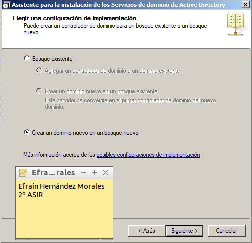Seleccionamos nuestro nombre de dominio.
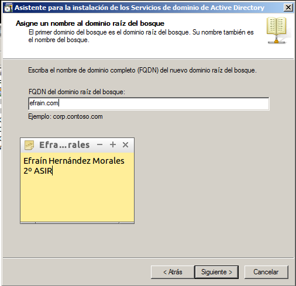Elegimos el servidor dns y finalizamos la configuración.
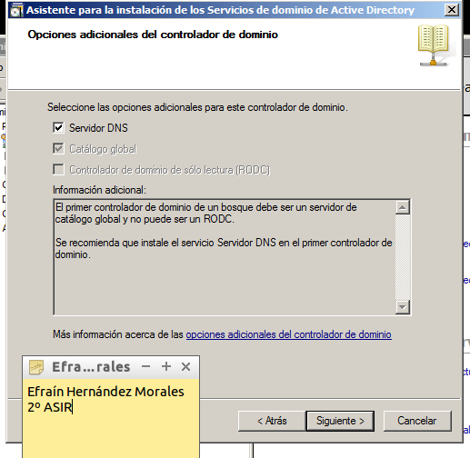2. gAWK
gAWK es más que un simple comando de procesamiento de patrones, es todo un lenguaje de análisis semántico. Su dominio es como aprender todo un lenguaje de programación, pero en esta ocasión veremos unos ejemplos de su potencia en unos casos sencillos de análisis de patrones de cadenas, espero te sirvan de base para que puedas aprender aun más sobre esta interesante herramienta. .
2.1 Instalación
Descargamos el programa y procedemos a su instalación.
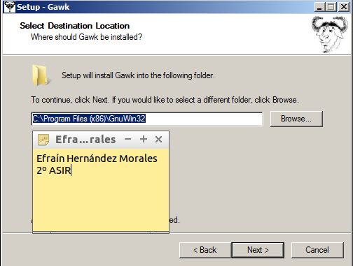A continuación, vamos a poner la aplicacion "awk.exe" como variable de entorno de windows. Para esto vamos a Panel de Control -> Sistema y Seguridad-> Sistema -> Configuración Avanzada -> Añadimos lo siguiente.
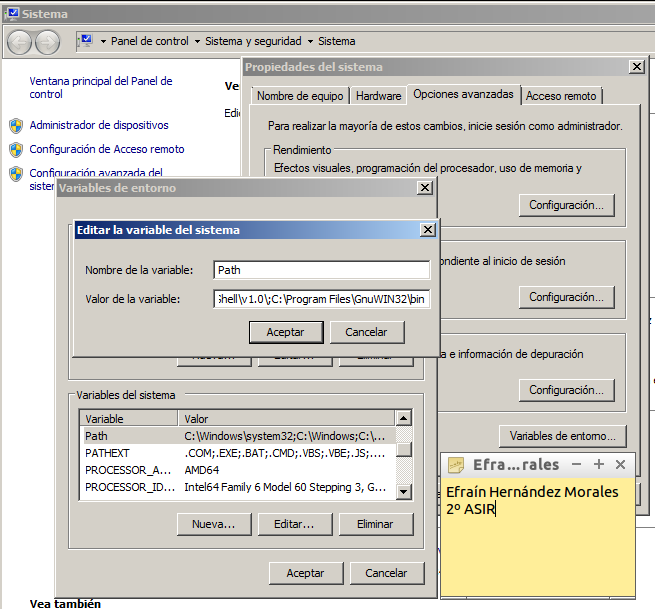3. XCALCS.vbs
XCACLS.vbs es un script que nos permite, ver, modificar y eliminar permisos NTFS en Windows.
3.1 Instalación
Primero descargamos el script desde su página oficial y procedemos a su instalación.
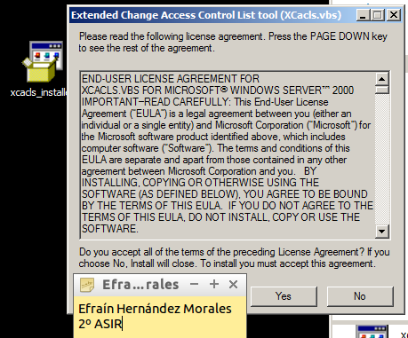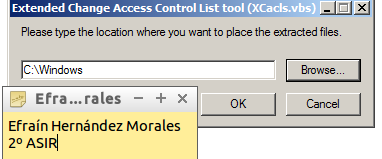
Ahora, vamos a la carpeta C:\Windows y editamos el archivo XCACLS.vbs añadiendo lo siguiente para que soporte la versión 6.0 (Windows Server 2008):
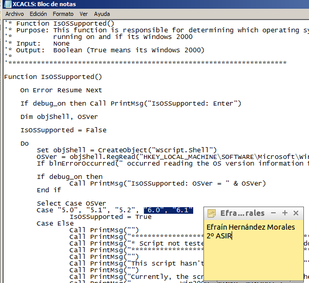Luego cambiaremos el motor de secuencias de comandos predeterminado, de WSCRIPT a CSCRIPT, esto debido a que XCACLS.vbs trabaja mejor con Cscript. Para eso escribiremos el siguiente comando en Ejecutar:
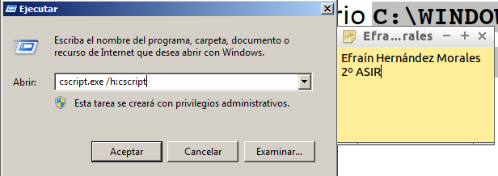Para utilizar el script, debemos abrir una nueva consola de línea de comandos (cmd) e ir hasta el directorio c:\WINDOWS.
Luego ejecutaremos "cscript.exe xcacls.vbs"
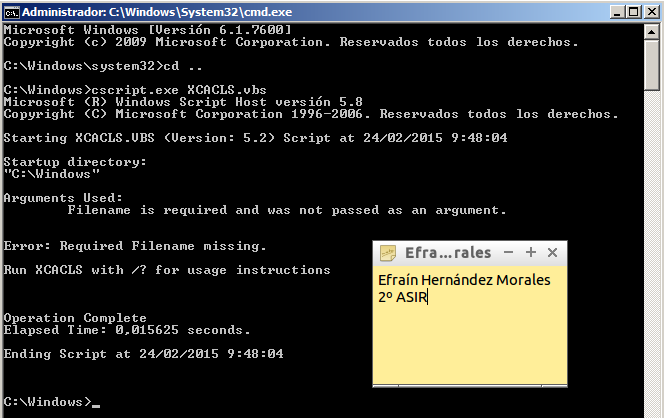3.2 Usuarios.csv
Ahora, creamos un archivo csv de la siguiente forma:

3.3 Alta.awk
Ahora, creamos un archivo awk de la siguiente forma:
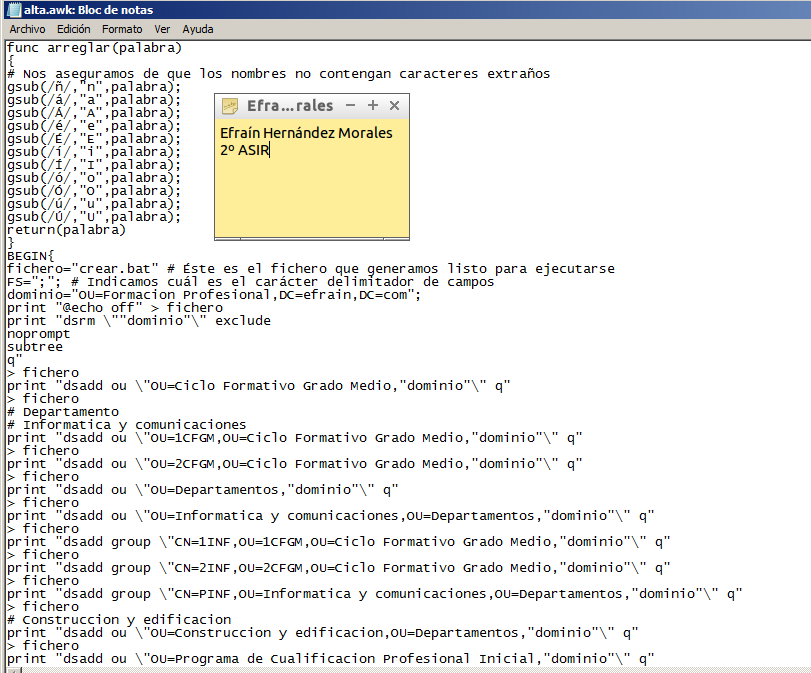3.4 Crear.bat
A continuación, vamos a la cmd y ejecutamos: "awk lf alta.awk usuarios.csv" y generamos el .bat
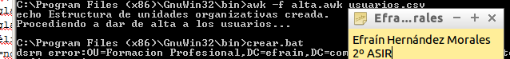Tras esto, ejecutamos nuestro script .bat
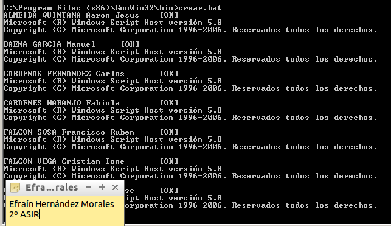Vamos a nuestros usuarios de active directory para comprobar que se hayan creado correctamente.
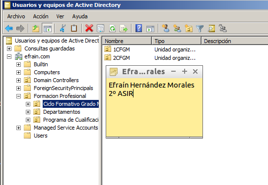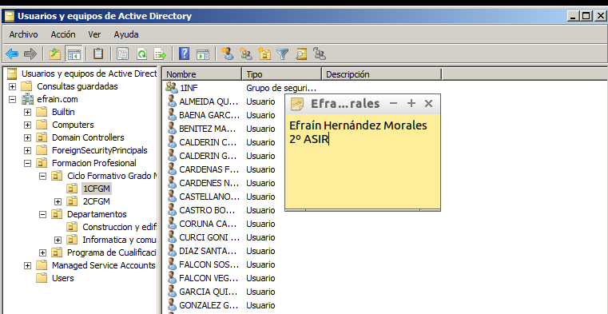
3.5 Archivos
Mis archivos creados en la práctica están: aquí (abrir enlace en una pestaña nueva)